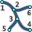
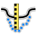
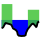
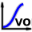
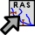

Step by step: HEC-RAS 1D Geometry¶
This manual presents using the RiverGIS plugin for creation of HEC-RAS 1D flow model.
RiverGIS tries to mimic the workflow of HEC-GeoRAS where it is possible and users are encouraged to read the HEC-GeoRAS documentation.
As an example, a modified Bald Eagle project data from HEC-RAS Unsteady Examples are used. The project source data can be downloaded from rivergis.com. The archive contains also QGIS project file with all the data and projection defined (NAD 1983 StatePlane Pennsylvania North FIPS 3701 Feet). Unzip the archive and open BaldEagle.qgs project file.
Typical RiverGIS workflow¶
- Create a new database schema for a model
- Set model’s spatial projection
- Create/import geometry of the model (river lines, cross-sections, hydraulic structures)
- Build rivers network (topology, i.e. reach connectivity and order, reach lengths)
- Calculate cross-sections’ attributes (stations, downstream lengths, etc.) and vertical shape (probe a DTM raster)
- Find Manning’s roughness coefficients for cross-sections
- Define additional cross-sections’ data (levees, ineffecive flow areas and obstructions)
- Build hydraulic structures (bridges/culverts, inline and lateral structures, storage areas, etc.).
- Create HEC-RAS GIS Import file
Create database schema¶
A fundamental difference from HEC-GeoRAS is that the RiverGIS uses a PostgreSQL database with PostGIS spatial extension for data storage (see Requirements for installation instructions). A term river database refers to a database used by RiverGIS. Until a database and schema are set in RiverGIS window, most of the tools are inactive.
A single PostgreSQL database can be used to store many models geometries. Each model goes to its own schema, a kind of database directory for data grouping. Therefore, the first step is to create a new schema for a model.
Users can create a schema in a number of ways: using pgAdmin, QGIS’ own DB Manager or from within RiverGIS dialog by choosing Database > Create New Schema or clicking tool icon from Database toolbar. RiverGIS will automatically switch to the newly created schema, as shown below. If a connection or schema was created in a previous session, it can be chosen from the DB Connection or Schema dropdown lists. When a schema is created from outside the RiverGIS use the Database > Refresh Connections List or the tool.
HEC-RAS 1D flow model geometry consist of rivers network, cross-sections and, optionally, hydraulic structures such as weirs, bridges or storage areas. Users have an option to import spatial data to the database from other data formats (i.e. ESRI Shapefiles) or create it from scratch.
Note
In PostgreSQL spatial layer data are kept in tables. In this manual we will use terms table and layer interchangably.
Each table has a number of columns defining object attributes. Some of the attributes, such as RiverCode , are to be set by a user and some are produced by RiverGIS. Users should not change the structure of river database tables.
Model spatial projection¶
Note
Spatial data are always stored using a projection. See QGIS Manual for Working with Projections
Before creating geometry objects users must choose a projection for a model data using projection selector at the bottom of RiverGIS window (shown above). All the model geometry data must use projection defined in the projection selector. If data for a model already exist in a spatial layer a user must check its projection for consistency with a projection chosen in RiverGIS projection selector and convert it if needed.
Model Geometry Creation/Import¶
Model geometry data are stored in a river database tables. There is a table for river lines, cross-sections etc. The table below lists river database tables created by RiverGIS. If a table needs a user specified attribute, it is given in the User defined attributes column.
| Table name | Contains | Type | User defined attributes |
|---|---|---|---|
StreamCenterlines |
river lines | polyline | RiverCode
ReachCode |
XSCutlines |
cross-sections | polyline | — |
Flowpaths |
flow paths | polyline | LineType:
Channel, Left or
Right |
BankLines |
channel bank lines | polyline | — |
LeveeAlignment |
levees | polyline | — |
IneffAreas |
ineffective flow areas | polygon | Elevation |
BlockedObs |
blocked obstructions | polygon | Elevation |
LanduseAreas |
landuse | polygon | N_Value:
Manning’s n value |
Bridges |
bridges/culverts | polyline | USDistance,
TopWidth |
InlineStructures |
inline structures | polyline | USDistance,
TopWidth |
LateralStructures |
lateral structures | polyline | USDistance,
TopWidth |
StorageAreas |
storage areas | polygon | Name |
SAConnections |
storage areas connections | polyline | Name |
There are three tables always required for a model creation: river lines, cross-sections and flow paths. The rest is optional.
Users create new tables using Database -> Create River Database Tables or tool. The following dialog allows for selection of tables to be created.
Newly created tables are automatically loaded into current QGIS project. QGIS always adds new layers above the active layer selected in the layers panel tree.
Database -> Load River Database Tables Into QGIS or  tool loads all river database tables that are not loaded already into QGIS project.
tool loads all river database tables that are not loaded already into QGIS project.
The loaded tables can be edited using QGIS editing tools or populated by importing data from other spatial layers using Database -> Import Layers Into River Database Tables or tool. Multiple geometry data can be specified.
Geometry objects created by a user must comply to the rules described in HEC-GeoRAS documentation, chapter 4.
We will import the Bald Eagle example data into the newly created schema. The source layers are grouped in the src group and there is RiverGIS group for data produced by the plugin. Select the RiverGIS as a target group for loading new layers before starting the import.
Attribute names of the source data can differ from the database attribute names, but can be mapped easilly to the right column, as shown above. If the required attributes are empty or nonexistent, users have to fill the database columns by hand after the import.
If the source layers group is switch off, only the imported layers should be visible. In the above picture also the landuse layer is turned off for clarity.
It is always good idea to check the imported data visually and have a look into the attribute tables. Here we check the StreamCenterlines if the required attributes are defined.
Note
Each StreamCenterline must have a distinct RiverCode and ReachCode attributes.
Creating the HEC-RAS geometry requires all user defined attributes to be non-empty.
River network¶
The river network is represented by StreamCenterlines layer. It has to obey the rules described in the HEC-GeoRAS documentation on p. 4-7.
Topology¶
|  | RAS Geometry > Stream Centerline Attributes > Topology |
The river network is built from StreamCenterlines layer by Topology tool . At each reach end a node is created (FromNode and ToNode), as shown below. The nodes are stored in NodesTable.
Lengths/Stations¶
RAS Geometry > Stream Centerline Attributes > Lengths/Stations |
The Lengths/Station tool finds flow direction and calculates river stationing for each reach end. It fills ReachLen, FromSta and ToSta reach attributes. Users can override the calculated values to adjust cross-sections stationing.
All¶
RAS Geometry > Stream Centerline Attributes > All |
Runs all river network tools, i.e. Topology and Lengths/Stations.
Copy Stream Centerlines to Flowpaths¶
| . | RAS Geometry > Stream Centerline Attributes > Copy Stream Centerlines to Flowpaths |
This will copy StreamCenterlines features to Flowpaths table and assign them Channel type.
Cross-sections¶
Cross-sections are represented by XSCutlines table. See rules for the layer in HEC-GeoRAS documentation on p. 4-11.
River/Reach Names¶
RAS Geometry > XS Cut Line Attributes > River/Reach Names |
Assigns each cross-sections a ReachID, RiverCode and ReachCode values.
Stationing¶
RAS Geometry > XS Cut Line Attributes > Stationing |
Calculates Station value for each cross-section.
Bank Stations¶
RAS Geometry > XS Cut Line Attributes > Bank Stations |
Calculates banks positions for each cross-section. Fills LeftBank and RightBank fields in XSCutLines table.
Downstream Reach Lengths¶
RAS Geometry > XS Cut Line Attributes > Downstream Reach Lengths |
Calculates distances to a next downstream cross-section along a flowpath. Fills the LLength, ChLength and RLength attributes of XSCutLines table.
Elevations¶
RAS Geometry > XS Cut Line Attributes > Elevations |
This tool generates points along cross-sections, saves them to XSSurface table and probes chosen DTM rasters for point elevation. The tool requires a proper DTM setup, i.e. which raster layers are to be probed for elevation (see DTM Options). Multiple rasters are allowed. If rasters overlap, a raster with higher resolution is used. The chosen set of rasters must completely cover all cross-sections.
Update Elevations¶
|  | RAS Geometry > XS Cut Line Attributes > Update Elevations |
This option is meant to replace original cross-section points with bathymetric information. In a range of limiting features the cross-section points extracted from the DTM are being replaced with measured points. The limiting features can be either bank lines or a polygon layer. XS Tolerance parameter can be used to filter out points located too far from a cross-section.
If bank lines limit the update process, a cross-section part (channel, left or right overbank) have to be specified. Warning: all original points from the chosen cross-section part will be removed.
A polygon layer limiting the update process can span to entire cross-section or its any portion. A single polygon can contain many cross-sections. No attributes for the polygons are required.
The elevation update process is described on p. 4-16 of the HEC-GeoRAS documentation. The following picture shows differences between the HEC-GeoRAS and RiverGIS versions of the tool:
Extract Manning’s n Values¶
RAS Geometry > Extract Manning's n Values |
The roughness coefficients for cross-sections are probed from LanduseAreas layer. The layer must completely cover cross-sections and the N_Value attribute of the layer must be specified for polygons covering cross-sections.
Additional cross-sections’ data¶
Levees¶
Levees are represented by LeveeAlignment layer. Rules for the layer are listed on p. 4-32 of the HEC-GeoRAS documentation.
RAS Geometry > Levees |
Calculates levee positions for each cross-section.
Ineffective Flow Areas¶
Ineffective flow areas, used to identify non-conveyance portion of the floodplain, are represented by IneffAreas layer. Rules for the layer are described on p. 4-24 of the HEC-GeoRAS documentation.
|  | RAS Geometry > Ineffective Flow Areas |
Finds ineffective flow area positions for each cross-section.
Blocked Obstructions¶
Blocked obstructions, used to permanently block a portion of a cross-section, are represented by BlockedObs layer. Rules for the layer are listed on p. 4-26 of the HEC-GeoRAS documentation.
RAS Geometry > Blocked Obstructions |
Finds blocked obstruction positions for each cross-section.
Hydraulic Structures¶
Bridges/Culverts¶
Bridge and culverts locations are represented by Bridges layer. The layer is processed in a similar manner as cross-sections: intersections with stream centerlines are used to calculate the stations, while elevations represents the top-of-road of the bridge deck. Rules for the layer are listed on p. 4-22 of the HEC-GeoRAS documentation.
| . | RAS Geometry > Bridges/Culverts > River/Reach Names |
Finds a river that the structures are crossing.
| . | RAS Geometry > Bridges/Culverts > Stationing |
Calculates stations of bridges/culverts.
| . | RAS Geometry > Bridges/Culverts > Elevations |
Probes DTM raster(s) for the deck elevations.
RAS Geometry > Bridges/Culverts > All |
Performs all of the above bridge/culverts actions.
Inline Structures¶
Inline structures are represented by the InlineStructures layer and are treated similar to bridge/culverts layer. The rules for the layer can be found on p. 4-36 of the HEC-GeoRAS documentation
| . | RAS Geometry > Inline Structures > River/Reach Names |
Finds a river that the structures are located on.
| . | RAS Geometry > Inline Structures > Stationing |
Calculates stations of the structures.
| . | RAS Geometry > Inline Structures > Elevations |
Probes DTM raster(s) for the top-of-weir elevations.
RAS Geometry > Inline Structures > All |
Performs all of the above inline structure actions.
Lateral Structures¶
Lateral structures are represented by LateralStructures layer. The layer can be also used to model levees or high ground that can be overtopped and connected to a storage area or another river. It is treated in a similar manner to inline structures. Rules for the layer are described on p. 4-38 of the HEC-GeoRAS documentation.
| . | RAS Geometry > Lateral Structures > River/Reach Names |
Finds a river that the structures are located on.
| . | RAS Geometry > Lateral Structures > Stationing |
Calculates stations of the structures.
| . | RAS Geometry > Lateral Structures > Elevations |
Probes DTM raster(s) for the top-of-weir elevations.
RAS Geometry > Lateral Structures > All |
Performs all of the above lateral structure actions.
Storage Areas¶
Storage areas, used for floodplain detension where the water surface will be horizontal, are represented by StorageAreas layer. Rules for the layer are listed on p. 4-40 of the HEC-GeoRAS documentation.
Terrain Point Extraction¶
RAS Geometry > Storage Areas > Terrain Point Extraction |
The tool probes the DTM raster(s) cells for elevation. No part of a storage area should be located outside the DTM. As a result, a SASurface table is created for storage areas volume calculation.
Creating the points grid for a large storage area and a high resolution DTM can be time consuming. For very large storage areas changing the tool’s Chunk size parameter is recomended.
Elevation-Volume Data¶
|  | RAS Geometry > Storage Areas > Elevation-Volume Data |
The tool calculates elevation–volume curve for each storage area. The curves are written to SAVolume table.
Storage Areas Connections¶
Storage areas connections, used to pass a flow between storage areas, are represented by SAConnections layer. The rules for the layer are described on p. 4-45 of the HEC-GeoRAS documentation.
Assign Nearest SA¶
| . | RAS Geometry > Storage Areas Connections > Assign Nearest SA |
This tool is used to identify storage areas for each connection. The result is saved to SAConnections table.
Elevations¶
| . | RAS Geometry > Storage Areas Connections > Elevations. |
Probes DTM raster(s) along each storage area connection and saves the points into SACSurface table.
Create HEC-RAS GIS Import file (SDF)¶
|  | RAS Geometry > Create RAS GIS Import File |
This will save the model geometry in the HEC-RAS GIS Import file format. Importing the file into HEC-RAS is described on p. 5-1 of the HEC-GeoRAS documentation.
Usually users have to run cross-section points filter to decrease their number (Tools > Cross Sections Points Filter in the HEC-RAS geometry editor).